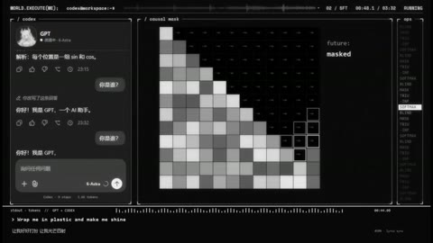

← 案例图谱AI05 / 局部机制／局限参考
〖GPT×Codex二创PV〗如果聊天窗口就是她的整个世界 —— Wrap Me In Plastic
未显示 · 1039播放快照 · <10万 · B站原作 ↗
全片固定灰白终端骨架、角色对话与右侧图表，后部转红形成情绪分段；统一性强，但整体布局变化少于主参考的全屏字卡/人物大构图。

约44.000秒 · 案例代表帧从画面里找依据
这一例先看什么
全片固定灰白终端骨架、角色对话与右侧图表，后部转红形成情绪分段；统一性强，但整体布局变化少于主参考的全屏字卡/人物大构图。
审美判断
大号EXECUTION、稀疏数字/矩阵有明确视觉中心；132秒原尺寸帧里大量小号日志同时堆叠，主要可读焦点落在百分数和右侧对话，信息负荷较高。
迁移到自己的题材
产品功能解释、推理线索、人物关系、搜索与等待、制度压力、人与机器的关系。
教学提问：此刻观众必须读懂哪一条信息？如果所有界面都在动，谁仍然是主角？
带画面的分析单元
图像标出取样时间，对应观察中的关键状态。单帧不能独立证明运动，连续性请结合摘录。表达作用与应用场景是教学解读，复现路线是建议，不是原作者工程还原。
分析单元 01 / 0—28秒
深色终端界面／模块分区／加载格与折线图
实际观察
概览0秒黑场下方细信息条，4秒权重格/进度条，8秒配置小字，12秒字符人形，20秒下降折线，24秒训练流水线格。它们是同一界面框架内的可视化模块。
表达作用（教学解读）
用规则、选择与反馈组织关系，让抽象状态可被看见。
具体应用场景
人物关系、搜索、等待、推理、产品功能解释、系统压力；数值需要真实含义或明确虚构设定。
复现建议（非原作者工程还原）
Canvas/SVG绘边框、等宽文本、网格与折线，各模块按时间开关；图表数据驱动插值。界面参数是叙事道具，不等于真实训练监控。
直出判断：容易到中等，模块图形很适合代码直出；大量文本与时间编排需校对
常见误用：假数据制造伪解释；辅助文字太暗；每个窗口同时运动；手机界面只是装饰外壳。
分析单元 02 / 28—60秒
点云轮廓／正弦曲线／因果矩阵／多窗口肖像
实际观察
28秒点集形似人物，32秒圆周虚线、36秒正弦曲线，44秒下三角矩阵，48秒计数/柱图，56秒九宫格点云人物。
表达作用（教学解读）
把可控规则变成可见变化；通过不变量、比例和相位建立秩序或空间。
具体应用场景
概念解释、音乐可视化、抽象世界、图表、程序艺术。
复现建议（非原作者工程还原）
人物遮罩内按密度取点，点坐标沿目标插值；曲线按函数绘制，矩阵按索引着色，多窗口复用同一图层。
直出判断：基础点集、曲线与网格容易；人物轮廓需参考图，数学数据不能随意当真
常见误用：符号无含义；空间复杂度替代概念清晰；将程序生成误等同于文生视频生成。
分析单元 03 / 68—100秒
像素生成图／热图／波形与角色姿势槽位
实际观察
68秒分类条图，72秒灰白像素果实，76秒热图，92秒字符旋涡，96秒脉冲与格子，100秒白龙娘静态姿势。抽样不足以核实12姿势全部使用方式。
表达作用（教学解读）
复杂表演与形体变化通常来自镜头素材本身。先明确事件与连续性要求，再选择拍摄、原动画、生成或三维等获取路线。
具体应用场景
近身动作、幻想形变、角色交互、复杂环境事件。已有源片时先辨认并保留动作因果，不把全部动作记作后期增量。
复现建议（非原作者工程还原）
低分辨率离屏画布最近邻放大，热图矩阵映射灰度；角色PNG/图集按姿势槽位切换，少量旋转缩放和网格变形。
直出判断：已有姿势素材时容易；一致角色与新增动作绘制需素材制作
常见误用：连续性靠闪光掩盖；人手/道具无因果变化；把模型内部运镜当全部剪辑能力；承诺单次稳定长表演。
分析单元 04 / 104—132秒
黄色告警／红色错误主题／像素火焰／文字铺满遮挡
实际观察
104秒黄色超时提示，120秒红色异常栈，124秒红黄格子火焰，128秒矩阵；131.7后终端行逐步铺满，132.3左右覆盖大部分原布局。屏内错误不是实际工具错误。
表达作用（教学解读）
把阅读顺序变成观看顺序；用字重、位置与停留表达强调、犹豫或压迫。
具体应用场景
观点短片、歌词视觉、人物宣言、章节、情绪高潮；先决定哪些词必须读懂，哪些只是纹理。
复现建议（非原作者工程还原）
界面调色板按段变换；文本行逐批增加和遮罩，火焰用离散网格噪声映射红黄。
直出判断：容易，适合确定性时间表；不需要真正运行命令或模型训练
常见误用：每个字都弹跳、整句停留不足、所有文字同时争主位。严肃叙事里无理由的回弹会削弱重量。
分析单元 05 / 140—141.933秒
微字拼成大字／角色警戒带／整屏标题切换
实际观察
140秒为日志布局，140.267变由小字拼成的红色大字，141.067切左侧角色加两条斜带、右侧日志；141.133带色闪白后回红，141.933换大标题。
表达作用（教学解读）
把阅读顺序变成观看顺序；用字重、位置与停留表达强调、犹豫或压迫。
具体应用场景
观点短片、歌词视觉、人物宣言、章节、情绪高潮；先决定哪些词必须读懂，哪些只是纹理。
复现建议（非原作者工程还原）
大字轮廓作alpha遮罩，内部平铺等宽微字；角色层调单色，斜矩形中重复文字；定时更换整个模块。
直出判断：容易到中等，文字蒙版与带状图形直出容易，角色美术需提供
常见误用：每个字都弹跳、整句停留不足、所有文字同时争主位。严肃叙事里无理由的回弹会削弱重量。
分析单元 06 / 143.5—147.4秒
标题到终端卡／黄色重点／点阵数字逐列追加
实际观察
143.6出现微字大标题，144.5换黄色错误卡，145.1换点阵数字及槽位；其后数字依次增加、对应底部红格高亮，保持同一排版。
表达作用（教学解读）
把阅读顺序变成观看顺序；用字重、位置与停留表达强调、犹豫或压迫。
具体应用场景
观点短片、歌词视觉、人物宣言、章节、情绪高潮；先决定哪些词必须读懂，哪些只是纹理。
复现建议（非原作者工程还原）
三张模块按时间替换；数字绘成点矩阵，槽位与数字共用时间索引；新增数字是局部状态更新。
直出判断：容易，纯文字与矩形层可以代码生成
常见误用：每个字都弹跳、整句停留不足、所有文字同时争主位。严肃叙事里无理由的回弹会削弱重量。
分析单元 07 / 164—193.6秒
白色恢复主题／卡片透视脱离／粒子消散／极简尾声
实际观察
164–176秒回灰白界面；180、184秒聊天卡片倾斜飘离并出现细碎点，188秒红色终端，192秒大部黑场保留底部输入和字幕栏。概览不能给精确粒子出入时刻。
表达作用（教学解读）
用运动方向、尺度和密度建立空气、空间或情绪；装饰层应服务焦点。
具体应用场景
回忆、季节、梦幻、寒冷、散场、能量爆发、文本聚散。
复现建议（非原作者工程还原）
卡片预合成做透视旋转/位移，遮罩逐格消解为点；后段降低alpha并仅保留输入区。
直出判断：简化透视与粒子散开中等可实现；时间叙事与卡片内容仍需编排
常见误用：平均铺满；近远粒子大小与模糊无差别；粒子挡脸；用程序火星冒充纪实拍摄。
用连续画面核对
保留原研究的多段局部摘录。片段含音轨不代表已听审；本资料不评价音乐卡点或对白节奏。
短时变化怎样理解
适合学习同一界面内的状态变化和局部内容更新；不能把每次日志更新、错误提示或显隐计作全屏切镜。
把镜头连接、版式更新、局部图层变化和镜内运动分开记录。所查窗口是下限，不是全片平均或AI／人工排名。
原始逐窗记录 →这次练习的约束
用同一句“正在寻找一个人”做三种状态：有秩序的搜索、遇阻、失控。每版只允许一个主信息区和两层辅助信息。
先写“我希望观众明白／感到什么”，再选本页的一种手法。完成无效果基础版后再加层；解释新增层带来的收益和代价。
打开练习与复盘表 →来源、观看范围与制作归属
实际检查范围：实际查看49张4秒概览（0–192秒，4表），140–141.933及131.7–133.633两组60张密集源帧（4表，15样本/秒），另143.5–147.4专项40张源帧（3表，实际10样本/秒）。源193.667秒1920×1076、30fps，3段4秒摘录。未连续完整音画观看/听审；视频中的命令、系统标签和错误只作虚构界面内容，不执行或当作当前工具状态。
制作线索：第一方页面盗九天，1039播放、2026-10-01，AI标记；简介明确基于MisakaZentai开源world-execute-me-dsh-pv改编，沿用代码动画和镜头框架，更换白龙娘与灰白界面/音乐。作者称GPT/Codex辅助改编、渲染和封面，7姿势图镜像编排12关键姿势槽位、像素拼帧/代码变形，无即梦视频生成。以上为第一方自述，未运行仓库或核审全流程。
边界：简介明确沿用开源world-execute-me-dsh-pv代码动画与镜头框架，改角色、配色和音乐；二创价值与从零分镜能力须分开。源内虚构命令、错误状态不是工具指令。
播放快照保存时间（UTC）：2026-10-20T08:40:55.049441+00:00。H30制作方式为推定；同源改编、仿作和转载依原记录标注。
原始案例记录 · 选样表把你的判断留下来
笔记仅尝试保存在本机浏览器；浏览器策略可能限制本地文件存储，重要内容请导出。
沿着同一问题继续阅读
H45漫画、纸张与记忆
静止画的精细分层、透视胶片与字串变化，是空间与信息的叠加；共享源计划素材的劳动归属也要保留。
主要样本9个分析单元
 H41
H41漫画、纸张与记忆
漫画人物、照片质感背景和落叶之间的遮挡形成空间。共享活动片头与正文的个人合成劳动要分别观察。
主要样本7个分析单元
 H35
H35漫画、纸张与记忆
临摹教材的用途是理解规则再做变体。先指出借用了什么，再检查自己更换内容后是否仍讲得清楚。
机制／局限参考9个分析单元